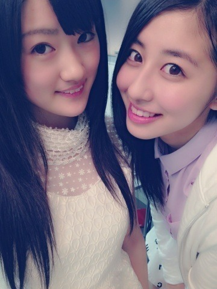
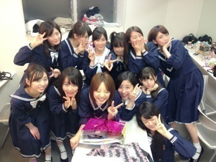

| 2013/05 14 Tue | Tokyo!!(´>∀<｀)ゝ |
ちはるーむへようこそヽ(^ω^)ﾉ

にな！
日曜日に、東京千秋楽を無事迎えることができました！！！
そして、日曜日の昼公演には
大好きな誠一さんとして
二幕に出演することができました( ；∀；)( ；∀；)
大好きな歌も歌えるし楽しいし
なにより、またこの役で出演できてすごく嬉しかった！！
投票してくださった皆さん、ありがとうヽ(；；)丿！
二幕で、ふさこさんとのラブシーンでは
ラブソング、斎藤家の歌を歌いまして。笑
楽しんでくれたみたいでよかったよかった

夜は北嶋に立候補したけど残念ながら( ；∀；)
悔しかったけど、なんとかやり切ったと思ってる！
うん！
投票してくださった皆さん、ありがとうヽ(；；)丿！

一緒に戦い、笑い、励まし合い、絆が深まった楽屋メンバー(*´;ω;｀*)
日曜日の夜の、
最後のライブではなんか号泣しちゃった。
悔しかったのか、
楽しかったからなのか、
公演が終わって緊張がとけたからなのかは
自分でもわからなかったけど
でもこの涙はきっと自分の成長のために必要な
大切なものだったんだと思います。
この公演は自分にとって殻を大きく破る場所であって
たくさんの方に見てもらうチャンスであって
女優として演じることのできる
最高の舞台だと思ってます。
だからこのチャンスを無駄にしないように
大阪でも突っ走っていこうと思います！！
楽しむことを忘れずに、
全力を出し切って、
悔いを残さない！
最後に、公演にきてくださった皆さん、
公演は行けなかったけど応援してくださった皆さん、
本当にありがとう！！！！ヽ(；；)丿
泣いたライブあと！
楽しかった！辛かった！でも成長できた！
ありがとう！！！！
ばいるんっ
るんるんっ
ちはるんっ
(´>∀<｀)ゝ
コメント(133)
2013/05/14 07:54